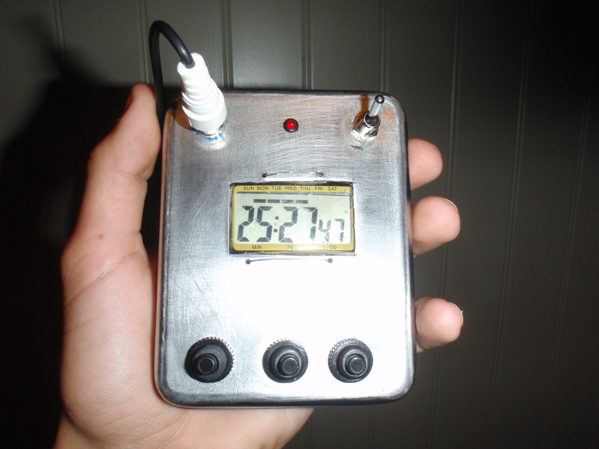
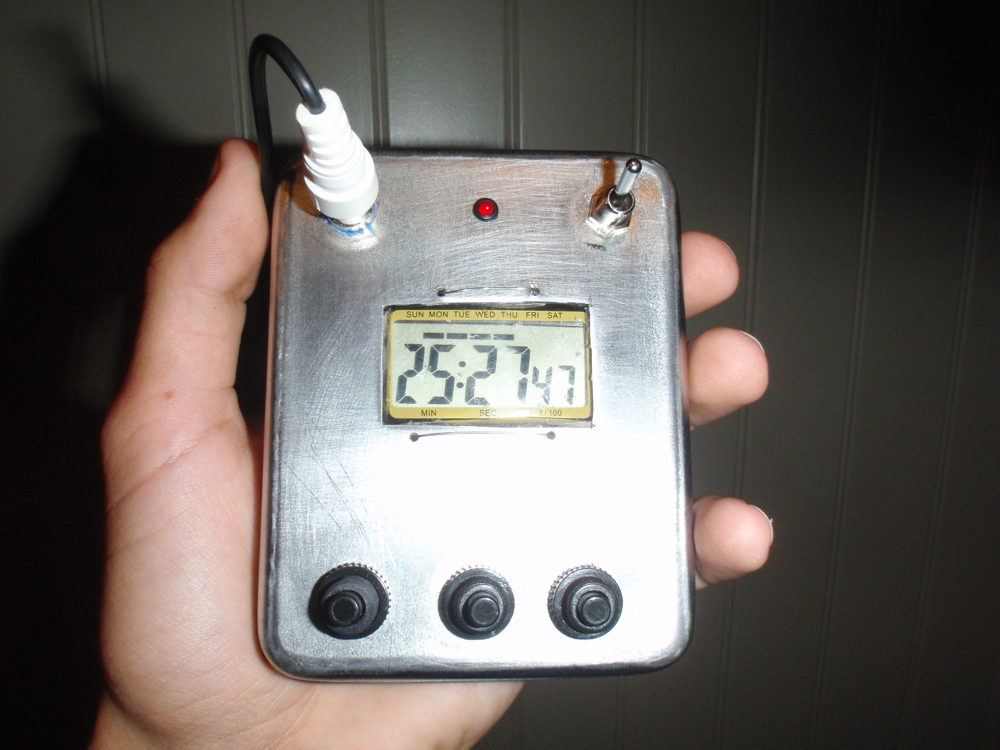

Go-kart Timer
This is an old project from when I was younger to precisely time laps of a Go-kart on a dirt track. I cannibalized a stopwatch and built a simple switch from some carpet sandwiched by two pieces of sheet metal.
The switch is connected to the start/lap button of the stopwatch and is triggered by the front wheels of the go-kart compressing the metal sheets together. There is also a simple 555 monostable circuit to provide switch debouncing and to prevent the rear wheels of the go-kart to trigger the switch a second time.
I used the toner transfer method to make the PCB from scratch.

 
